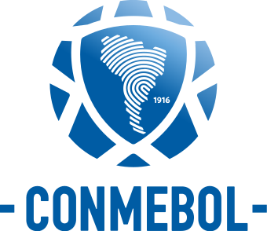

Os confrontos para a Copa Río de La Plata entre os campeões da Argentina e do Uruguai acenderam a ideia de uma competição continental na década de 1930. Em 1948, o Campeonato Sul-Americano de Campeões, o precursor mais direto da Copa Libertadores, foi realizado e organizado pelo clube chileno Colo-Colo após anos de planejamento e organização. Disputado em Santiago, no Chile, o torneio reuniu os campeões das principais ligas nacionais de cada nação, sendo conquistado pelo Vasco da Gama do Brasil. O torneio de 1948, disputado no modelo "torneio dos campeões", deu impulso ao referido modelo, que foi o adotado para a criação da Copa dos Campeões da Europa em 1955.
Em setembro de 1958, o brasileiro José Ramos de Freitas, então presidente da CONMEBOL, fez uma viagem à Argentina, para, dentre outros assuntos, tratar da criação de um campeonato sul-americano de clubes campeões, semelhante ao já existente na Europa. Em 08 de outubro de 1958, João Havelange anunciou, em reunião da UEFA a que compareceu como convidado, a criação da Copa dos Campeões da América, um equivalente sul-americano da Copa dos Campeões da Europa, de modo que os campeões de Europa e América do Sul pudessem decidir "o melhor time do mundo", através da Copa Intercontinental. Em 5 de março de 1959, acontece em Buenos Aires, sede da 26ª Copa América, o 30º Congresso Ordinário da CONMEBOL. Naquela reunião foi ratificada a criação da Copa dos Campeões da América, que reuniria todos os times campeões nacionais na América do Sul para uma disputa de melhor time do continente.
O nome do torneio é uma homenagem aos principais líderes da independência das nações da América do Sul: José Artigas, Simón Bolívar, José de San Martín, José Bonifácio de Andrada e Silva, D. Pedro I do Brasil, Antonio José de Sucre e Bernardo O'Higgins.
Na Libertadores a Argentina tem 25 titulos da copa, já o Brasil tem 20 e se for ver quando foram feitas essas conquistas voce percebe um fato um pouco estranho, a Argentina e Uruguai conquistando muitos titulos e o Brasil conquista 2 com o Santos do Pelé e um com cruzeiro isso em 20 titulos disputados, tudo isso se deve ao fato que o Brasil se importava mais com Estadual do que a Libertadores. Por incrivel que pareça o Brasil não se importava no inicio com a Libertadores, inclusive jogando com reservas e focando o estadual que seria mais importante para esse período, fazendo com que o Brasil tivesse poucos titulos até a decada de 90 / 2000 que fez com que o Brasil comecasse a ter mais titulos.
Historicamente, o Brasil era conhecido por ter jogadores mais habilidosos, que parte para o drible sem se importar com quem estava marcando ele, com isso os argentinos cresceram ouvindo que para parar brasileiros tinham que chegar forte pois o Brasil não tinha muita força fisica, uruguaios tambem entenderam isso que sempre que tinha uma bola disputada o jogador brasileiro perdia, sempre que tinha um carrinho com violencia, o brasileiro ficava bravo e queria descontar e como naquela época não existia expulsão, todos que enfrentasse time brasileiro batia sem dó.
Como já dito aqui, o Brasil não se importava com a Libertadores, então times que era mais forte na época da criação eram os Uruguaios e os Argentinos pois como tambem ja dito aqui, havia um torneio entre eles, eles ja tinham tradição de jogar contra tanto que nas primeiras 20 edições a final foi entre um time uruguaio x time argentino em 7 ocasiões e entre campeões só deram eles, Santos e Cruzeiro.
Eu poderia falar tradição, que a Conmebol ajuda a esses times a chegar longe, que são os times mais fortes, mas na verdade tudo se ressume a uma palavra, DINHEIRO, nenhum outro time da america do sul recebe o que os times brasileiros e a dupla da argentina recebe. Tanto que em uma época o valor que o campeão da copa do Brasil recebia era maior que o valor do campeão da libertadores.